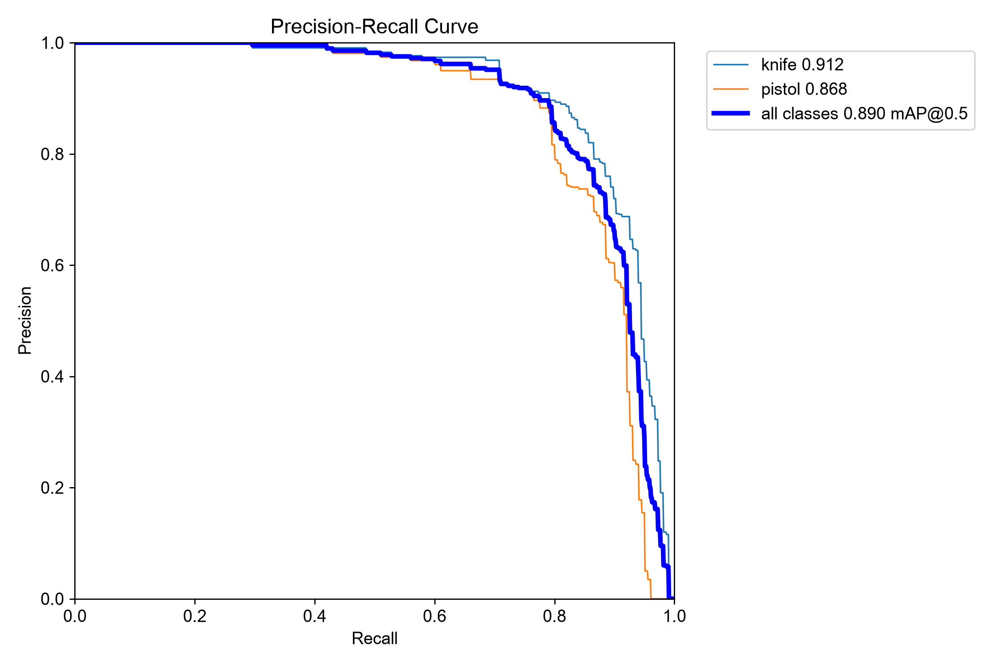
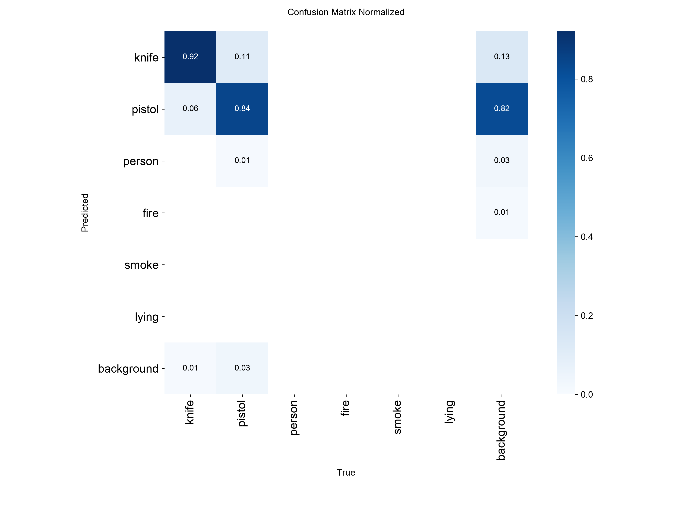

Open incidents
◉
07
Requires response
A live overview of your visual intelligence network.
Monitor visual intelligence, detect incidents, and coordinate response from one operational surface.
Generate supervisor-ready reports from the reporting worker.
Choose an image, run the trained model and inspect the measured evidence.
Choose an image from your Mac. Analysis has no side effects; an incident is created only after you explicitly confirm the result.
The headline number is a fixed held-out weapon comparison. Six-class behaviour is reported separately and honestly.


YOLO supplies the detector architecture. CYPHER supplies the dataset pipeline, false-positive controls, operational severity rules and incident integration.